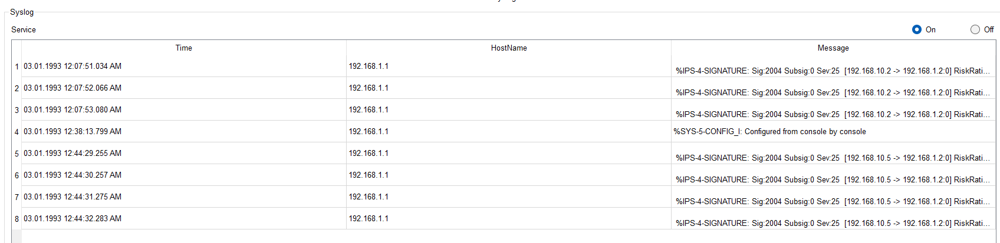

Project Overview
This project demonstrates the implementation of an Intrusion Detection System (IDS) using Cisco Packet Tracer. An IDS monitors network traffic to detect suspicious activities and potential threats. The project focuses on a signature-based Network IDS (NIDS) configured on a Cisco router to analyze ICMP packets (like pings) and generate alerts.
The aim of the project is to build a basic security infrastructure that detects intrusions and logs alerts to a centralized SYSLOG server. This enhances the network's ability to respond to potential attacks proactively.
Network Design
The simulated network includes:
- 3 Routers (with dynamic routing enabled)
- Multiple end devices (PCs and laptops)
- 1 SYSLOG Server
- 1 HTTP Server and 1 FTP Server
- 3 separate LANs interconnected via routers
Router0 is configured with IDS on interface GigabitEthernet0/0 to monitor all incoming ICMP traffic and log alerts when a match occurs with the configured IPS signature.

Configuration Steps
The IDS is configured by activating the security license, defining a rule, enabling the basic signature category, and applying the rule to the interface. The SYSLOG server is also configured to receive alerts.
Steps:
- Enable the security package:
license boot module c1900 technology-package securityk9 - Define IPS config location:
ip ips config location flash: - Create an IPS rule:
ip ips name IDS - Enable signatures:
ip ips signature-categorycategory all→retired truecategory IOS_BASIC→retired false
- Apply IDS to interface:
interface g0/0→ip ips IDS out - Enable logging:
logging host [SYSLOG_IP],service timestamps log datetime msec
Detection Output
After setup, pinging from another network into Network 1 generates alerts like:
%IPS-4-SIGNATURE: Sig:2004 Subsig:0 Sev:25 [192.168.10.2 -> 192.168.1.2:0] RiskRating:25
These alerts appear in the router console and are also logged in the SYSLOG server. This confirms the IDS is active and monitoring network traffic as expected.
Download Project Files
You can download all the related files for this IDS project below:
📂 Cisco Packet Tracer File (.pkt) 📄 Project Report (PDF) 🖼 Network Topology Diagram (PNG) 📄 IDS Alert Output (PDF)